CS 180 Final Project Deliverable
Stephen Yang and Minjune Kim SID: 3035725692 and 3037012174
Project 1 of 3: Lightfield Camera
When toying with the images, we noticed by averaging out the different images we got a clear back of the image but not a clear front.
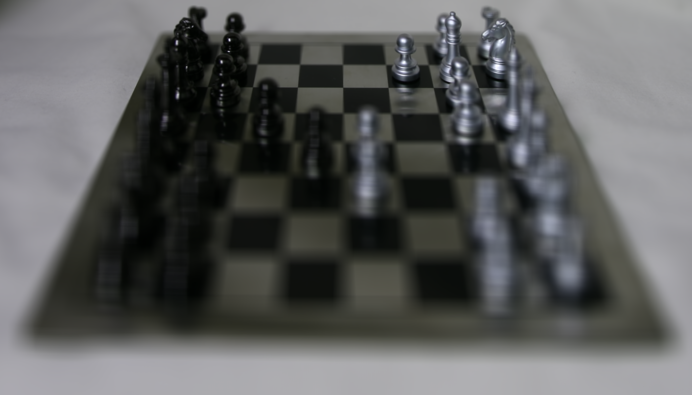
Averaged images in the dataset
Then when we adjusted the images based on the coordinates in the image name we got a clear middle row but everything else was blurry
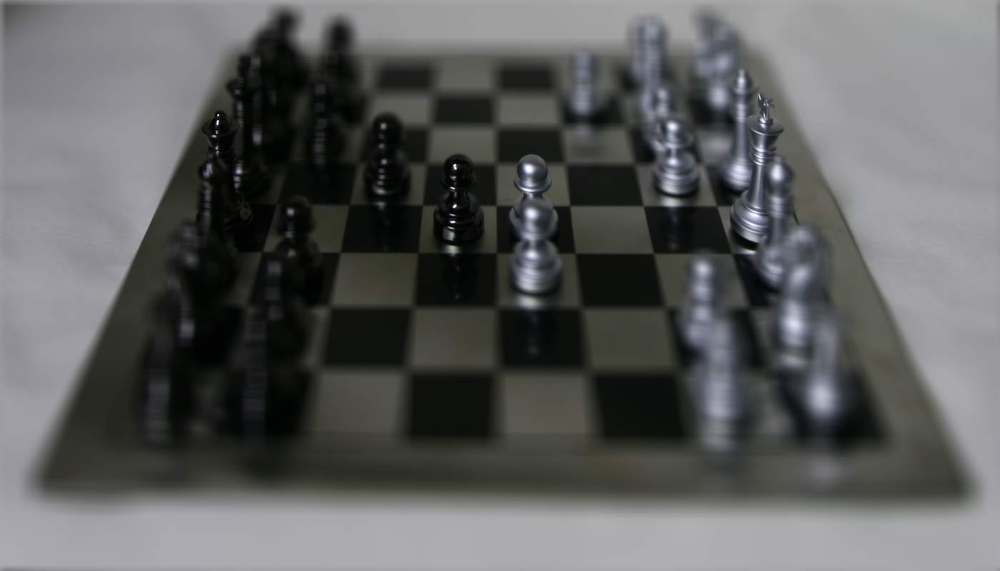
We then toyed around with the different adjustments shifting the image by the coordinates in the file name multipled by some constant

As the constant increases, the clear part of the image gets closer to the front.
Next we worked on varying aperture of the image. We realized by manipulating the number of images that were taken in we got varying degrees of aperature.
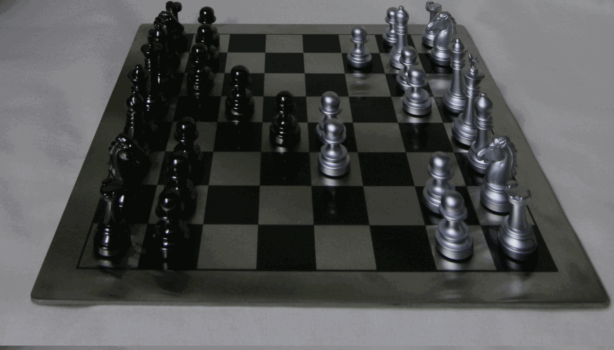
We used all the images and decreased the number of images used to maniuplate the aperature.
Bells and Whistles: Interactive Refocusing
We realized we could map out a range of constants that represents the the constant required to blur everything except the back (0) and the constant required to blur everything except the front (3)
Then we could find the constant that would make that point clear by the formula: 3 * y_coord_of_point / im.shape[0]. Multiplying the max number the constant could be by a fraction representing how far down the y_coord is.
_beginning.png)
_blur.png)
_beginning.png)
_blur.png)
_beginning.png)
_blur.png)
On the left are the images in the beginning and the right shows the blurred equivalent. Note that the dot on the image is where the code is trying to refocus.
Project 2 of 3: A Neural Algorithm of Artistic Style
In A Neural Algorithm of Artistic Style, Gatys suggests to use the VGG-19 neural network with pre-trained weights. Because of this, we used a library online to get the VGG-19 neural net.
We also heeded the warning in the paper and changed all the maxpool layers to avgpool.

Content Loss Function
The content loss measures the difference in content between the generated image and the content image.
It is typically computed using the feature maps of a certain layer in the VGG-19 network. We took the original style and the content style of the image and got the L2 norm of the images, and divided it by 2. As stated on the paper.
Style Loss Function
The style loss measures the difference in style between the generated image and the style image.
It involves comparing the correlations between the different feature maps across the layers of the VGG-19 network. We took the original style and the stylistic image and got the L2 norm, and divided it by 4 * features^2 * feature_field^2. As stated on the paper.
I combined these two images, using the first as the content and second as the style.
 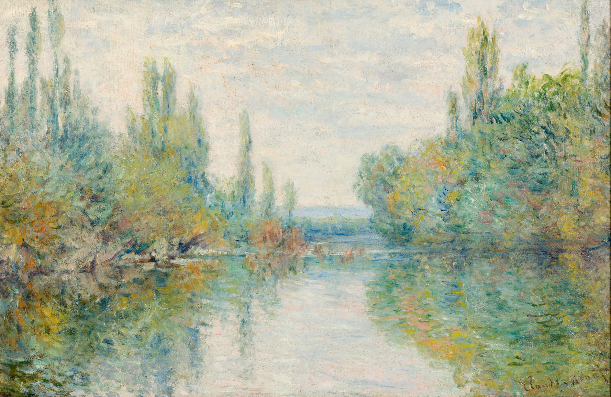
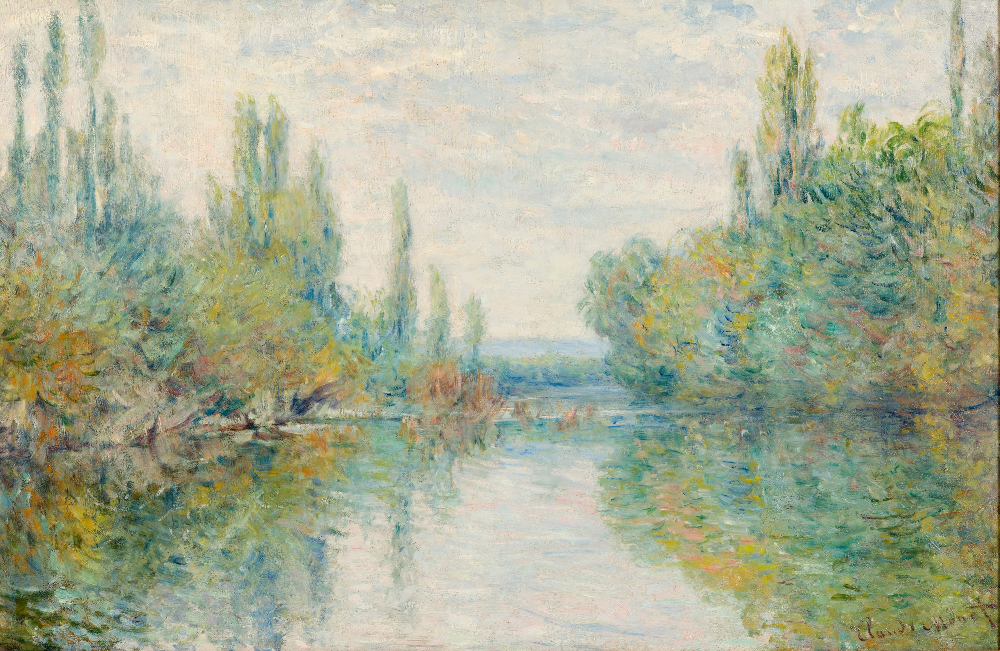
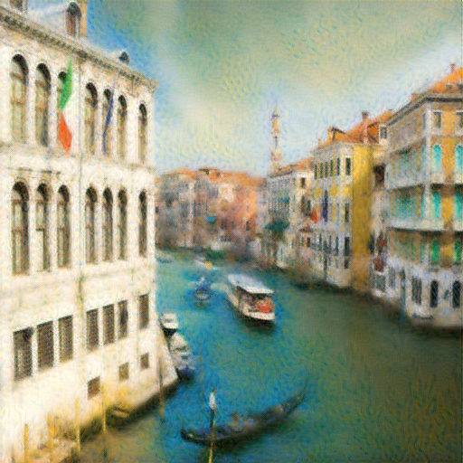
This image was created with learning rate of 0.004 and alpha/beta of 1/10
Project 3 of 3: Image Quilting
In this project, we explored a way to generate a larger texture image from a small sample. We used SIGGRAPH 2001 paper by Efros and Freeman as our referance.
The main goal of this project was to account for the smoothness of attaching the small texture samples together. When we did random sampling, the edges of each random samples did not look smooth.
The overlapping patches and the seam finding helped us improve the roughness of the concatanation of the random samples.
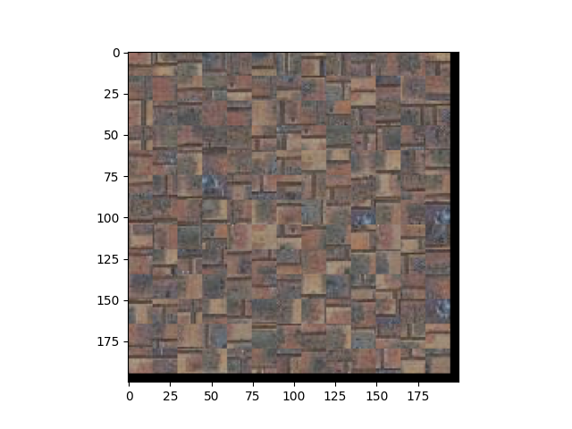
Random Sampling of Brick Wall
Then we created a function that would make the sample texture more smooth. We implemented min-cost function of the output image and newly sampled patch. We would choose one of the "tol" lowest cost values to be the sampled patch.
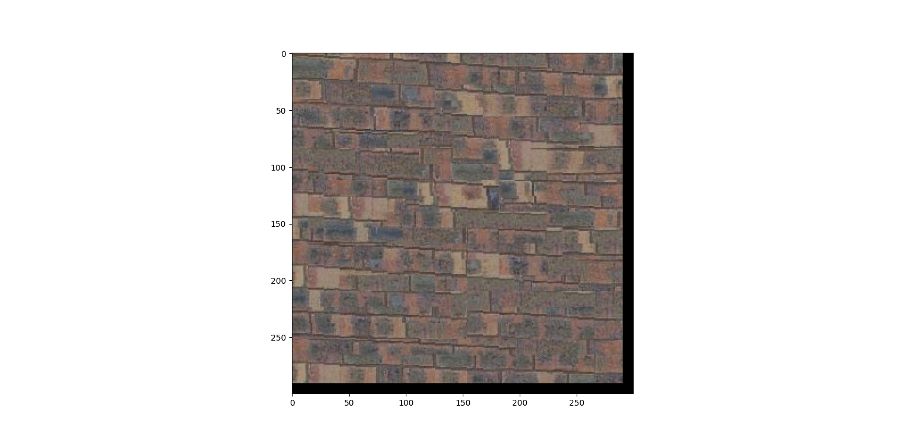
Quilt Sampling of Brick Wall
Then we implemented a min-cost function that would return the cost of a patht through each pixel. We needed to use this function for horizontal mask and vertical mask. If a patch had both, we used np.logical_and to combine the two masks.
Out of the three results, this result should and looked the most smooth.
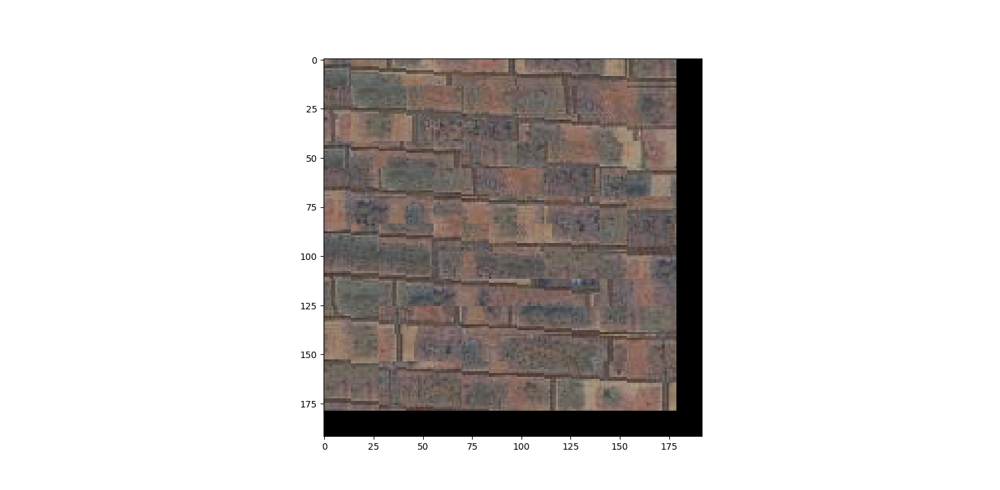
Quilt Sampling with seam of Brick Wall
Incorporation of Texture Transfer.
I combined these two images to create a texture sample.
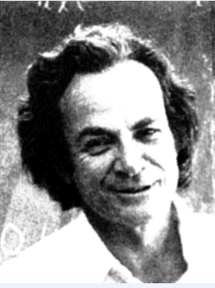

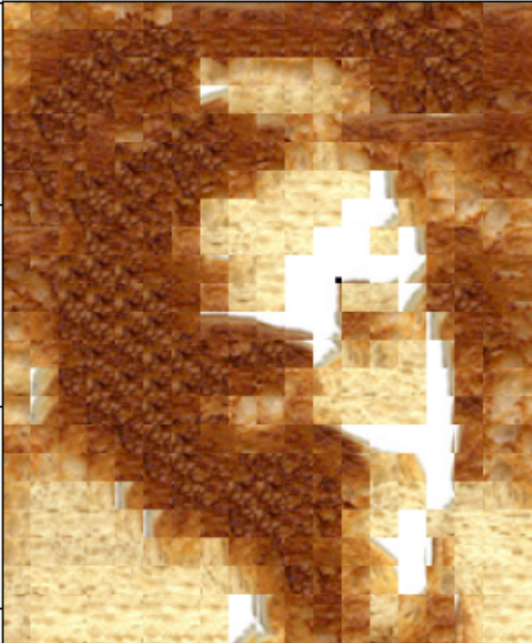